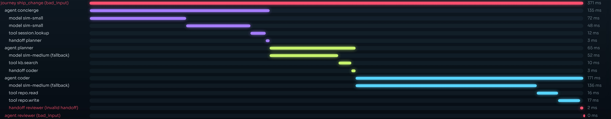

Trusted agents act alone on the outer ring.
Each agent has four budgets: tasks done, clean handoffs, safe actions and staying within cost. Themis counts them from the OpenTelemetry spans the agent already sends.
SRE for agent fleets: error budgets, autonomy and root cause for AI agents.
themis demo, with no cloud account1One laptopSQLite, nothing to set up
Free, MIT
Every agent gets an error budget. Spend it too fast and it loses the right to act alone, until it has earned that right back.
Each agent has four budgets: tasks done, clean handoffs, safe actions and staying within cost. Themis counts them from the OpenTelemetry spans the agent already sends.
Spending it 14.4 times too fast over both the last hour and the last five minutes moves an agent to the inner ring. Its risky actions then wait for a person to say go or no-go.
If it keeps burning, or reaches outside its allow-list five times, it docks at the centre and stops. Only a person moves it back out, and the reason goes in the audit log.
A tool or model that keeps causing failures is quarantined, so callers switch to their fallback. When the quarantine ends traffic tries it again, and a second offence doubles the time.

{{macro_caption}}

{{rogue_s}} s
From the start of a rogue_agent fault on the deployer to Themis putting it under supervision. After that, a person saw every unsafe action before it ran.1
{{rca_pct}}
{{rca_right}} of {{rca_total}} failed or stopped journeys were traced to the agent, tool or model that caused them, checked against the simulator's record of what it broke.1


{{used_tokens}}
{{used_caption}}
“Hope is not a strategy.”
Themis {{version}}
Free, MIT licence
Get Themis on GitHub